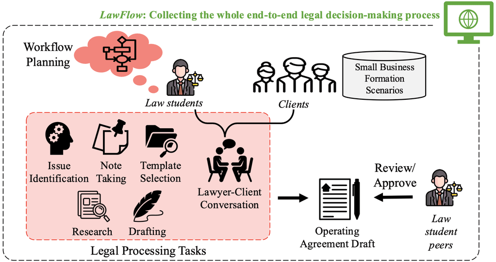
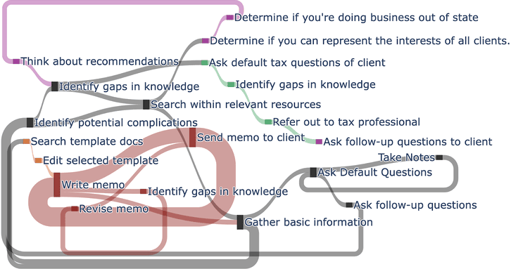
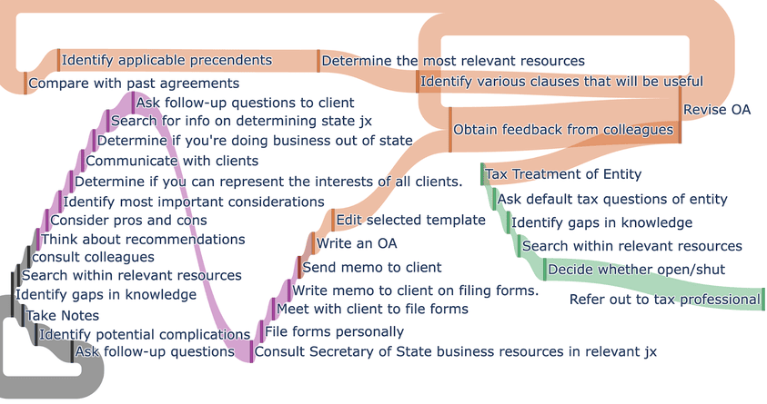

Your company's second brain
One memory of how the whole firm works — every channel, expert, and year.
Company AI · On-prem · Self-evolving
Your company's second brain — a private AI that runs inside your firm, learns how your experts work, and keeps their judgment evolving.
One memory of how the whole firm works — every channel, expert, and year.
Runs on your own hardware. Client and patient data never leave the building.
Senior judgment becomes a company asset that improves with every correction.
01 · Why now
Know-how goes into a prompt, an answer comes out, and tomorrow it starts over. The firm learns nothing — and the know-how still walks out the door.
Every session starts from zero.
No record of why an output came out that way.
Individual use; the firm's workflow doesn't move.
02 · Deploy first
In LawFlow (COLM 2025), trained law students ran business-formation matters in a simulated small firm — and we recorded every step of their decisions.

What we found
Experts are selective. AI is exhaustive.
People plan in layers, follow the branch that matters, and loop back when something changes. LLM agents plan flat and run straight through. The expert's value is in what they don't do.
The two maps below are the same matter — one walked by a person, one by an LLM agent.


Judgment lives in the process — and the process lives inside the firm.
Engineers on-site, a light recorder on your machines, a model that grows inside your walls.
Screen, keystrokes, and traces — with consent. No change to how experts work.
Traces become a map of your real workflows in week one.
Experts' corrections set the target. A human always signs off.
Your model, on your hardware — better every month.
03 · Technology
Labs evolve models outside the customer; integrators deploy models that never change. We evolve a small local model inside the firm — in work no benchmark can grade.
Research behind it
Papers and open-source work from the founding team's lab.
End-to-end legal workflows from trained law students on business-formation matters, compared with LLM agents: humans plan modularly and adapt; LLMs run sequential, exhaustive plans.
arXiv ↗ ACL 2026About 62K keystroke-level edits of researchers writing papers, each labeled with the writer's intention. A ~0.1B model trained on it beats GPT-5 at predicting the next intention (0.64 vs. 0.41 F1).
ACL Anthology ↗ COLM 2026Turns raw video of people working into action- and intent-state models. Label normalization cuts the vocabulary 46% and lifts next-state top-1 accuracy by 18.2 points.
arXiv ↗ CAIS 2026 Workshop · OralTurns 156K evolutionary-search trajectories across 371 optimization tasks into training data, so 2B–9B open models learn to discover.
arXiv ↗ Preprint · 2026Recursive self-improvement through emergent depth: one meta-operation, applied to its own traces and code, keeps adding layers until improvement stops.
arXiv ↗ Open source · Apache-2.0An open platform for LLM-driven evolutionary search: compose population, selection, prompt, proposer, evaluator, and memory into your own scaffold.
open-galapagos.com ↗04 · On-prem scaling law
Your context is scattered across channels, people, and the work itself — and locked inside the firm. Deployment connects the dots; connected dots reveal the workflow.
Your domain
The card on the chart follows your pick.
DiscoverOptimizeCoach
ObservedMost of the search population is noise — yet every document is still read by hand at title, abstract and claim level.
SuggestsScreen the population against your own written criteria first, and hand over only what they cannot decide.
~400 documents a day · automate
ObservedThe standard core of the information-request list is re-assembled by hand for each deal; only the industry-specific part really changes.
SuggestsBuild the list from your standard core — 148 items, 26 industry-specific, 4 pulled from the kick-off transcript.
every deal · automate
ObservedPredicate comparison tables and equivalence arguments are rebuilt from scratch for each new product, even when the predicate recurs.
SuggestsReuse the predicate’s own comparison rows and raise only the characteristics that actually changed.
each new 510(k) · automate
ObservedYour valid/noise criteria are rewritten at every client meeting, and the batches already screened keep the old ones.
SuggestsRe-score the screened population against criteria v3 — 81% decide automatically, and only the low-confidence 19% comes back to a consultant.
each meeting · a consultant confirms
ObservedPartner redlines land on the same CIM sections every deal — 23 on the last one.
SuggestsMake “lead each highlight with a quantified proof point” a house rule. Replayed on 7 past deals: rubric 0.76 → 0.81, nothing else regressed.
every deal · the partner approves first
ObservedReviewers send back claims that lack matching evidence, and the same gaps recur across sections before sign-off.
SuggestsAdd one check before the sign-off gate: the predicate table must address every technological characteristic.
every draft cycle · the regulatory lead signs off
ObservedJunior and senior consultants reach different valid/noise decisions on similar documents, and the difference is never written down.
SuggestsShow the senior’s reasoning on exactly the documents where the junior diverges, at the moment of the call.
~3 a day · the difference becomes a criterion
ObservedBuyers approached on past deals are searched for again from scratch; what happened last time does not carry over.
SuggestsAt the buyer-list step, surface who passed, who never returned the NDA, and the reason recorded then.
every deal · at the buyer-list phase
ObservedA senior engineer’s decisive step in a bench test lives in their hands; the SOP records it as one line.
SuggestsRecover that step from the recording and put it into the SOP before the hand-over, not after it.
per procedure · surfaces at hand-over
Discover → Optimize → Coach: capability on your own work compounds as context accumulates on-prem.
Every card is a suggestion the system raises on its own — you approve, edit or reject it. Drawn from the workflow patterns we catalog across verticals; firms anonymized, figures illustrative.
05 · How we start
Engineers on-site, a lightweight recorder, and approval gates — a human signs off before anything goes out.
Pick the workflow; install the recorder with consent.
One workflow, one person, measured against your rubric.
On your hardware, benchmarked against your baseline.
Better every month. Month 12 is not month 1.
In the field
Design partner, pilots, and firms in conversation
06 · Team
Founder & CEO
FDE Lead
ML Engineer
Statistics PhD · big tech & finance
CS PhD · big-tech ML
CS PhD · applied scientist
Part-time
Legal & IP · infra · AI startups
We’re hiring
Own what we ship into live deployments: turn what our engineers see inside a firm into a product the next firm can run. On-site with design partners, close to the loop.
A free 1–2 month pilot. Our engineers come to you. Nothing leaves the building.